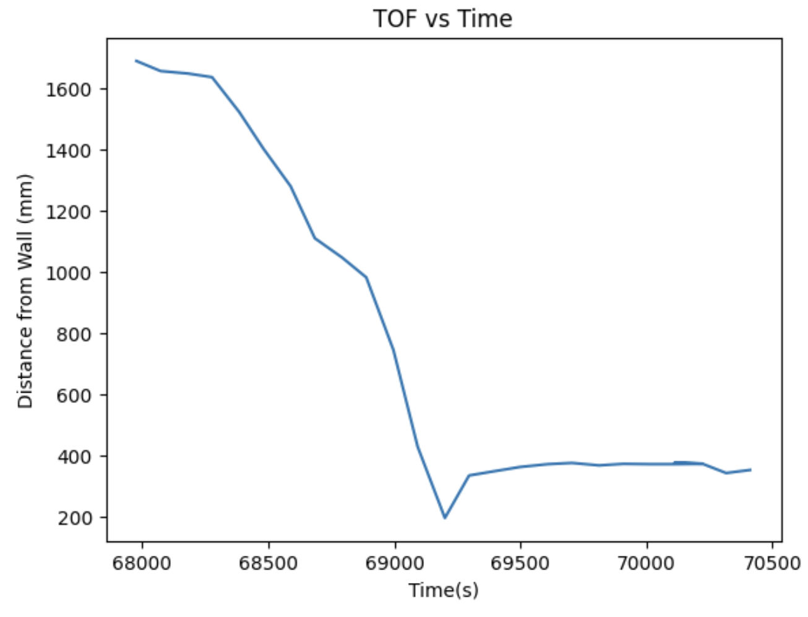
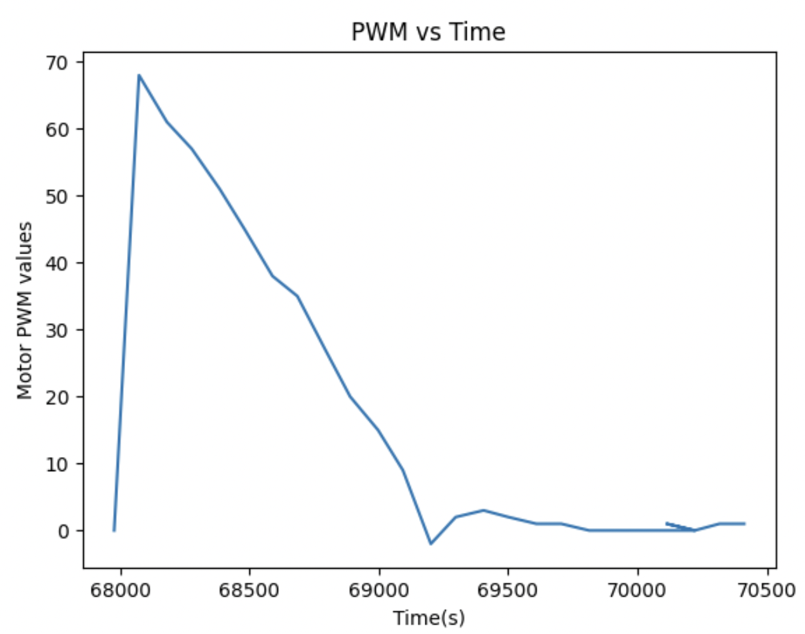
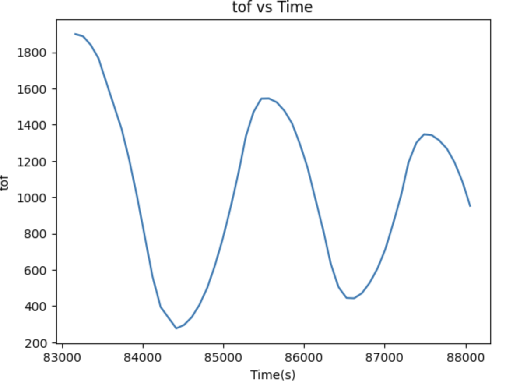
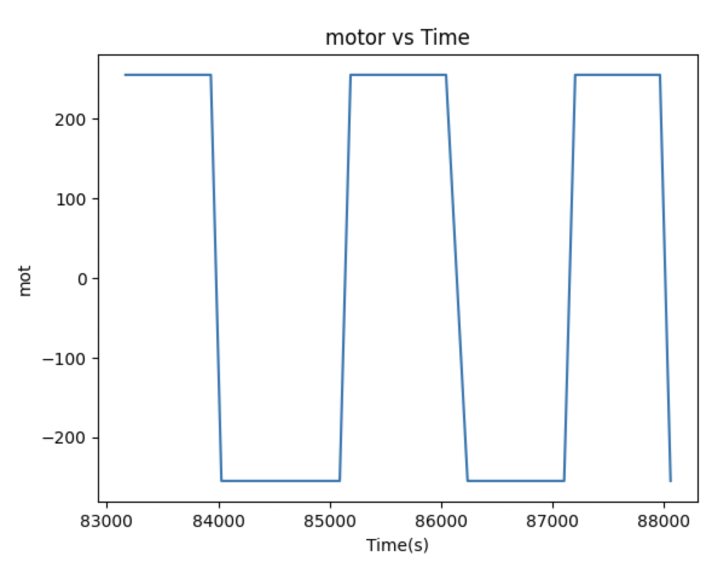

Lab 6 Closed Loop Control using PID
The purpose of this lab was to add closed loop control to the robot in the form of PID to get the robot to stop when it is within one foot of the wall.
PRELAB - Bluetooth
Before beginning this lab, I wanted to ensure that I was able to create a debuggable system of sending data to be able to tune my PID values better. I did this by executing PID control over a certain period of time and when it is executing, add the data to its associated arrays, and then send it over bluetooth once the task is done.
I chose to do Task A and wanted to use the front TOF sensor to send the data. Sending the data everytime that I received new data would be too slow so I stored the data first in the Artemis (in arrays) and then sending it over once the flag is set to be true and after 20 seconds of data have been taken. After testing out how many data points I need to test Task A, I found out that an array size of 150 is ideal. I collect the time, the speed, and then the tof data on the Arduino side. When sent over bluetooth, I receive the data and process it using a notification handler as in previous labs.
PID Implementation
Closed Loop Control is used because we wanted the system to be able to make its own adjustments -- the current output is sensed and compared with the desired output and then the error between the two is used to adjust the control input to the system. Using this error, the robot, in our case, can slowly move itself toward the desired state. This is implemented using PID control.
PID stands for Proportional Integral Derivative and the controller is composed of these terms which are summed together to form the control input. I chose to implement a P controller - it is proportional to the current error between the measured and desired error. This controller will take in the error signal and kp value as input. The Kp value wil calculate the speed of the robot proportionally based on the error between the current + target (which is detected based on the TOF sensor). This is seen in the code snippet below. I also added a limit speed section based on my results from Lab 5, to ensure that the robot would move even if it goes beyond the max/min speed limits.
Tuning PID
I started off with just a P controller so I could tune that value accordingly to understand how my robot reacted to the small changes and then wanted to add the I as well if there was time. My goal was to drive the robot towards a wall and then have it stop when it reaches 304 cm (1 ft) from the wall. I will do this using the TOF sensor readings and then change my KP value based on the PWM output from the motors and also how it visually responds.
I started off with a Kp value of 0.09 - just to see how my robot reacts to the PID control. This value was way too high and resulted in my robot shooting towards the wall and essentially crashing into the wall. It wasn't able to break quickly enough to prevent the giant overshoot which is what resulted in the crash. Another reason that it could potentially overshoot is because I am only using the proportional value of the error and not the integral + derivative. The next value I tried was 0.04 which was more reasonable but it still had a slight movement backwards and wasn't able to get the distance correctly on the first try. I then tried 0.01, which ended up being too little, and the robot didn't even move since it didn't have enough drive to do so. After trying these values, I picked 0.035 which ended up being the most ideal combination and stopped almost exactly one foot from the wall.
Something that also affected my KP value was the surface that I was practicing on. When I tried it on carpeted surfaces, it ended up working better with higher Kp values in comparison to the floors in Upson + Philips. I ended up using the floors in Upson for my PID control.
Demonstration of PID
PID w KP = 0.035
I also plotted the TOF vs Time + PWM vs Time for the most ideal run which was when the Kp value was 0.035.


PID w KP = 0.09 The PID value is too big and it overshoots.
I also plotted the TOF vs Time + PWM vs Time for the overshoot run which was when the Kp value was 0.09. In this graphs, the oscillation is visible and it kinda goes all over the place.


PID w KP = 0.01 The PID value is too small and it doesn't move.
Range + Sampling Time
Before conducting this PID lab, I made sure in the prelab to avoid delays without sending data while the PID control is executing and removing any print statements for debugging. Regardless of this, each iteration of the loop takes around 0.09 seconds, meaning the sampling frequency is 15 samples per second.